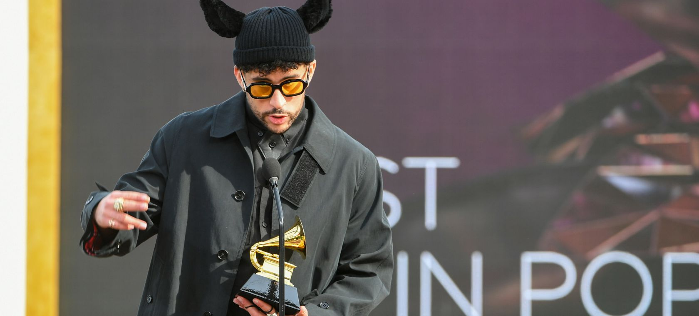

- 2018
- Artista del año en Premios Latin American Music
- Canción del Verano en los MTV Video Music Awards «I Like It» (feat Cardi B, J Balvin
- Canción urbana favorita en Premios Latin American Music «Mayores» (Becky G feat. Bad Bunny)
- 2019
- Grammy Latino a Mejor Álbum de Música Urbana «X 100pre»
- 2020
- Grammy a Mejor álbum de pop o urbano latino «YHLQMDLG»
- Mejor Interpretación Reggaeton «Yo Perreo Sola»
- 2021
- Grammy Latino a Mejor Canción de Rap/Hip Hop «Booker T»
- Grammy Latino a Mejor Álbum de Música Urbana «El último tour del mundo»
- 2022
- Grammy a Mejor Álbum de Música Urbana «El Último Tour del Mundo»